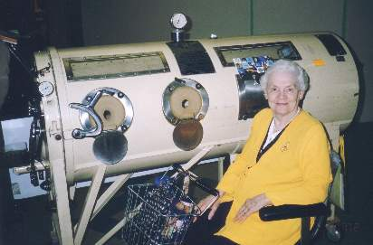
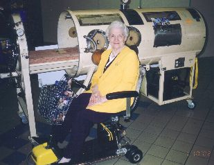
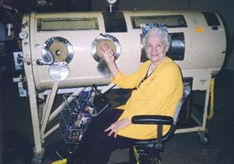
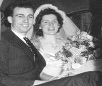
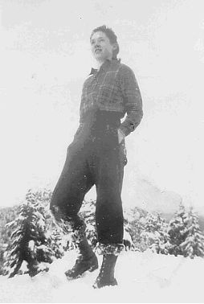
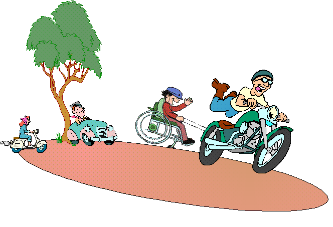
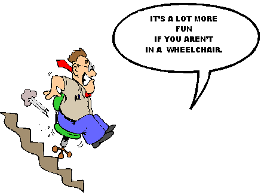

|
CLICK (gently!) on Granny's
|
 |
to close this page.
|
IRON LUNGS AND WHEELCHAIRS
1. MEMORIES OF THE IRON LUNG
Viola Pahl was 22 years of age and seven months' pregnant when she contracted polio. She spent a short time in the iron lung, and in this section, she relates some of the emotional trauma she had with this aspect of her disability.

2. WHEELCHAIRS - HORRIFIC OR TERRIFIC
In her eighth book, Viola talks about wheelchairs, which she
constantly uses in her older years.
This is one of the chapter titles from the book entitled:
HOW TO BE INCOMPATIBLE AND LOVE IT
There is a lot of wit and humor in her treatise on wheelchairs.In 2002, I spoke at the Rotary Club to thank them for the many good things they are doing in preventing polio in third world countries. I suggested to them that they place an iron lung in the local mall to gain more interest in their program. This they did, and I went to the mall to see the iron lung. It was the first time I had seen an iron lung since 1948 when I was in one for two weeks. A sudden surge of emotion went through me, and the tears started to flow. With difficulty, I constrained myself as there were many people standing around. As they looked at the lung, I heard some say, "What is this for?" Polio tends to be a forgotten ailment nowadays, and people do not even recognize an iron lung. I feel so sorry for people who have had to be in an iron lung for long periods of time. I did not enjoy my sojourn in the lung one bit, and it was a welcome day when I was finally taken out of it.
The first book I wrote was "Through the Iron Lung." The foreword was written by Dr. M.L. Leuschner, Editor of Promotional Literature, the North American Baptist General Conference. Here is what he wrote:
|
We are attracted to some lives by the scintillating glory
of their spiritual victories. They have conquered their adversities, and we are
inspired by their example. They have found grace sufficient for every ordeal,
and we would like to know the secret of their invincible lives. Charles H.
Spurgeon said: "Some people owe the grandeur of their lives to their tremendous
difficulties." Strange as that paradox sounds, we, too, are eager to belong to
their noble company. Many long, fearful shadows have fallen across the pathway
of Viola A. Pahl. The remarkable thing about her life is that she never
lingered long in the shadows. She always emerged triumphantly. Even when
stricken seriously with polio and fighting for her life in her new "mechanized
home," her life story is that of going victoriously "Through the Iron Lung." In
her home life and ministry as a pastor's wife, as well as in her editorial
activities as contributor of poems, articles, and stories to Christian
publications, she has been as radiant as a rainbow that shines after the storm.
The author of this captivating testimonial regarding her handicap has found the
joy of living through days of shadow and of sunshine in the Cross of Christ her
Lord.
|
As you know, I was seven months' pregnant when I contracted polio. I was in isolation hospital for six weeks, so I could not have visitors. When the staff thought I was going to die, they allowed my husband to see me. There I was - all alone - no family, no friends, no-one to be with me. But wait - we have a joke in our family regarding my stay in the iron lung. I was not alone after all. I say to my son, "You are a wonderful son. When no-one else was with me during my stay in the iron lung, you were with me day and night." And he even kicked around in my tummy to let me know he was still alive in spite of it all! When I narrate our little family joke to friends, it always brings a chuckle.
|  monster? |
 |
My fantastic care-giver Fred, a retired Baptist pastor,
has been faithfully by my side during
my 55 years as a polio survivor,
and he is also a marriage survivor of 57 years!!!
|  |
How would you like this view from your south-west corner condo unit? From my computer nook, I look south and see Washington, USA. On good days, even the Olympic Mountains show up. To the west is Vancouver Island, and in the above picture, the sun is setting over the Island. The city of White Rock is small - population about 18,000. It used to be a resort city because of the beautiful sandy beach area, but now it is built out with condos and seniors' complexes. I'm sure it must be the wheelchair, scooter, walker, crutch, cane capital of Canada. The weather is most favourable here. The city has tried to preserve blocks of tall evergreen trees such as you see above on the skyline. We see these gorgeous sunsets all year round.
THE PROPHETIC PLAY I WROTE AT AGE
17
At age 17, my imagination soared to grandiose heights. We - the church youth group - would present a spectacular play which I had written. It was entitled THE HAVEN OF REST. I wanted the main character of the play to have a disability. I mused: Blindness? No. Deafness? No.
But if one couldn't cycle, run, jump, or hike up magnificent Grouse Mountain because you were a paraplegic, that would be a disaster. In the play, the disabled girl appears to be dying. Her wayward brother stands at her bedside, and she pleads with him to become a Christian. The story has a happy-ever-after ending. The disabled girl gets better, and the brother accepts the Lord as his Saviour. I wanted so desperately to play the part of the helpless girl, but the youth committee chose an attractive young lady. I didn't begrudge her the role because she was excellent and a far better choice than I would have been. Fred Pahl enjoyed playing the "black sheep" in the drama, and he did his part so well, that in the death-bed scene, he actually cried and many in the audience shed tears along with him.
At age twenty, I married Fred Pahl, and we went to Bible College to prepare for missionary service in China. At age twenty-two, I contracted polio when I was seven months' pregnant. China became a dream of the past, because polio attacked my lower limbs, leaving me dependent on crutches and wheelchair for the rest of my life. Instead of going to China, Fred became a Baptist pastor. The youth at our second church were very active, and they were searching for a play to present. I rescued my old manuscript The Haven of Rest from its literary grave, shook off the dust, and gave it to the group to preview. They loved the play, and when it was presented in various churches, everybody wisely nodded and said, "Only Mrs. Pahl could write that type of a plot, for she knows what it is like to be handicapped."
Alas, I mused. "I wrote that play when I was in the best of health, not after I had polio." Isn't it ironic that the worst disability I envisaged when I was strong and healthy now became my life's challenge? When I first penned The Haven of Rest, I had no knowledge of the difficulties paraplegics encountered. I had never read about nor had I ever met handicapped people at that point in my life.
Although I now had first-hand experiential insight, I realized no word or line of the original play needed revision. Amazingly, my penned thoughts about the frightfulness of being disabled described reality rather than fiction. In the play, the heroine emotionally described her infirmity.
|
You don't understand! You don't know what it means
to sit back and watch other girls playing basketball, running races, and
swimming when you are always confronted by a burden - being crippled. It is
something which seems to wrap a net around your whole being, and no matter how
hard you try to forget about it, it is always there, looming up like an ominous
shadow. Oh! You can't understand!
|
I was amazed at the words I had written. I couldn't have said it any better after the fact. Once again, Fred played the part of the "black sheep" much to the delight of the congregation to see their pastor portraying the opposite of what he taught. As he went through the death-bed scene, he was gripped by the reality that he now had a wife who was a paraplegic and who would never regain the ability to walk normally. The tears were more intense this time, and the audience was very moved. Our daughter Susan, five years old at the time, began to sob as she watched the drama. "I know Daddy's only pretending," she wailed, "but when he cries, it makes me cry, too."
After the initial onset of polio, I spent several weeks in an iron lung. It was a horrific experience. While I was in the iron lung, I had frightening dreams which seemed so real. My iron lung travelled through the air and took me to one of my favourite spots: Grouse Mountain. However, in my wild dream, no-one would ever open the iron lung and set me free. I was trapped, helpless, in a prison! And for many years, one of my most frequent dreams was hiking, or trying to hike, up Grouse Mountain. Alas, I would awaken to the fact that hiking was not to be for the rest of my life.
In 1940, I had discovered Grouse Mountain when I was age fifteen. In those days, there were no chair lifts up the mountain, so I hiked up the 4,000 feet. It was strenuous, but exhilarating. The view from the top of the mountain was a most inspiring sight. To the west was Vancouver Island and to the east, Mount Baker in Washington stood above everything else in regal splendor. Far below, the city of Vancouver sprawled in magnificent beauty. With snow-clad mountain peaks etching a brilliant blue sky, I experienced a peace, a joy, a kinship with the Lord that was very special. Up here, I left behind the noisy city, the multitudes of people, and a home where parents, unfortunately, were shackled with alcohol. Because of the alcoholism, money was scarce in our home, so I left high school before graduation and was already working at a clerk's job. The journey to Grouse Mountain was also an escapism from a stressful job. I stood tall and straight, strong and muscular, young and filled with dreams and goals. More important, when I stretched my arms heavenward and had communion with my Lord and Saviour, I felt free - on top of the world - liberated! The picture below where I am standing on "top" of the world is old, but the memory of the moment is as fresh and new as ever.
I'm pressing on
the upward way; New heights I'm gaining, ev'ry day; Still praying as I'm onward bound, "Lord, plant my feet on higher ground." |
 | I want to scale
the utmost height, And catch a gleam of glory bright; But still I'll pray till heav'n I've found, "Lord, lead me on to higher ground." |
A Few More Pictures and Thoughts
Majestic Mount Baker
One of the views from Grouse Mountain |
A view of Grouse Mountain (left)
from Vancouver |
Looking down on beautiful Vancouver
NO WONDER I LOOK FORWARD
TO ETERNITY WITH THE LORD!
I WILL LEAVE BEHIND MY WHEELCHAIR AND CRUTCHES,
A N D S O A R T O H E A V E N B E Y O N D!
A B S E N T F R O M T H E B O D Y -
P R E S E N T W I T H T H E L O R D
F O R E V E R A N D E V E R, A M E N!
LIFE FOREVER MORE!
"I am alive forever!" This is the word He said;
In Him there is no dying, In Him are no dead;
"I am alive forever!" This is His word to me
Through season after season To live eternally.
"I am alive forever!" Oh tell it far and near;
No more can winter trouble Or autumn bring its tear.
"I am alive forever!" Let seasons go or stay,
For Christ is mine forever, Forever and a day.
I know not when the future Shall bring tearful good-byes,
But this will be my heaven, To look into His eyes,
To hear His lovely voice As He sweetly welcomes me -
"Thou art alive forever, Alive eternally!"
TO ETERNITY WITH THE LORD!
I WILL LEAVE BEHIND MY WHEELCHAIR AND CRUTCHES,
 |
A N D S O A R T O H E A V E N B E Y O N D!
A B S E N T F R O M T H E B O D Y -
P R E S E N T W I T H T H E L O R D
F O R E V E R A N D E V E R, A M E N!
LIFE FOREVER MORE!
"I am alive forever!" This is the word He said;
In Him there is no dying, In Him are no dead;
"I am alive forever!" This is His word to me
Through season after season To live eternally.
"I am alive forever!" Oh tell it far and near;
No more can winter trouble Or autumn bring its tear.
"I am alive forever!" Let seasons go or stay,
For Christ is mine forever, Forever and a day.
I know not when the future Shall bring tearful good-byes,
But this will be my heaven, To look into His eyes,
To hear His lovely voice As He sweetly welcomes me -
"Thou art alive forever, Alive eternally!"
WHEELCHAIR CHALLENGES
|
"INCOMPATIBLE" |
|
|
|
|
|
|
ALARM GOES - WHAT THEN? |
|
|
|
In 1949 Grandpa was called to serve his first church in a
rural area. There was a flight of stairs into the church. No problem. Granny
didn't weigh much, and Grandpa's arms were strong and sturdy. He just packed
Granny up those stairs with great ease. The wheelchair was taken separately
(Granny could stand for a few minutes by hanging onto the railing of the
staircase.) However, the greatest obstacle was bathroom facilities. Neither the
manse nor the church had indoor plumbing. In fact, in that area no-one had
indoor plumbing. Fortunately, Granny's physical "plumbing" had not been
paralyzed, so it was extremely rare for her to need to visit an "outhouse" when
she was away from the manse. It was not comfortable when visiting a
parishioner's home to know that the hostess had to take you aside to a bedroom
and provide a "potty" for your needs. In the privacy of the manse, a bedpan
could be used, and Grandpa never grumbled or complained about the disagreeable
task of tending to Granny's needs in this respect. After nearly four years,
Grandpa accepted a call to another church, and while the church was not
equipped with indoor plumbing, the manse was. It was fantastic to have indoor
plumbing and running water. Things could only get better. (And no! positively
no! Granny will not go into the arithmetic about how many times Grandpa carried
bedpans in those early days.)
From 1949 until 1977, every church Grandpa served had outdoor facilities or flights of stairs to the washrooms. In Alberta, where there can be snow drifts from October to April, the outhouse was not a place for wheelchairs. Flights of stairs were also very formidable. Somehow, Granny coped with these incompatible situations and has lived to see better days.
Granny urges everyone on a church building committee to have facilities for the handicapped in a separate unit, rather than a handicapped stall in the ladies' room, and another stall in the men's room. With the separate room, an able-bodied spouse can help his/her spouse who may need assistance.
From 1949 until 1977, every church Grandpa served had outdoor facilities or flights of stairs to the washrooms. In Alberta, where there can be snow drifts from October to April, the outhouse was not a place for wheelchairs. Flights of stairs were also very formidable. Somehow, Granny coped with these incompatible situations and has lived to see better days.
Granny urges everyone on a church building committee to have facilities for the handicapped in a separate unit, rather than a handicapped stall in the ladies' room, and another stall in the men's room. With the separate room, an able-bodied spouse can help his/her spouse who may need assistance.
Yes, yes, yes! Employment is possible for wheelchair
users. Throughout the years, Granny worked at various jobs, and if the distance
from the car to the work area was not too far, Granny used her crutches. Granny
did mostly secretarial work throughout the 1950s and 1960s. In the 1970s,
Granny worked in the correspondence office of the Premier of the Province of
Alberta. In the 1980s, Granny was able to get a position as a relief instructor
in Business Administration at a College.
From a wheelchair she taught Shorthand, Business English, Office Procedures and Typing. Other wheelchair-confined persons have also succeeded in employment. A gentleman from Wisconsin wrote:
From a wheelchair she taught Shorthand, Business English, Office Procedures and Typing. Other wheelchair-confined persons have also succeeded in employment. A gentleman from Wisconsin wrote:
Viola: I have worked from my wheelchair for forty-seven
years. Thirty of those years were full-time, and the last seventeen have been
from home on a volunteer basis. Of course, it was accounting, marketing and the
like.
Granny was an avid swimmer in her youth. She won a
scholarship to the club where Olympic swimmers trained. After having polio, her
swimming skill remained (however, her endurance was more limited). Imagine
yourself by a pool where you see a fully-clothed man wheeling a lady in her
bathing suit to the pool's edge. He helps her dismount to the pool's edge, and
then pushes her in. You gasp with consternation, but to your amazement, the
lady turns over on her back and floats like a cork, and then she swims a length
of the pool, even though her legs are dragging without too much movement. Well,
you've just witnessed an oft-repeated scene from Granny and Grandpa's life.
Grandpa is like oil - he just doesn't mix well with water, so he rarely ever
goes in a pool.
Too Have and Too Old
The bride, white of hair, is stooped over her cane
Her faltering footsteps need guiding.
While down the church aisle, with wan toothless smile,
The groom in a wheelchair comes riding.
And who is this elderly couple you ask?
You'll find, when you've closely explored it,
That here is that rare, most conservative pair,
Who waited 'til they could afford it.

Somehow, there had been a mix-up in communication between
a wheelchair-bound young man and the gymnasium where he wanted to go for a
workout. One of the instructors had promised to pick up Allan and take him to
the gym. When the day arrived, to Allan's dismay, a motorbike instead of a car
arrived at the door.
"Well," proffered the apologetic driver, "it's too late to get a car for you. How would it be if I chained your wheelchair to the back of my motorbike, and I will pull you to the gym. If I go too fast for you, just honk your horn and motion for me to slow down."
The arrangement appeared to be satisfactory, and the odd couple went speeding down the highway. However, the biker, forgetting about the wheelchair, started to accelerate his speed. The young man waved his arms and honked his horn frantically for the biker to slow down. Alas, the noise of the motorbike drowned out the faint beeps of the wheelchair's horn, and because the biker had no mirror attached, he did not see the frenzied arm signals of the terrified paraplegic.
A traffic reporter looked at this oddity from his helicopter perch and quickly contacted the highway patrol. "Quick - apprehend the motorbike speeding down the highway. You've gotta stop him."
"Okay - calm down. This happens all the time," came the nonchalant reply.
The reporter, who had not noticed the chain joining the wheelchair and motorbike, blurted out in excitement, "But you don't see what I am seeing. There's this wheelchair racing behind the motorbike, waving his arms wildly, and he's… he's trying to get that motorbike to move over and let him pass!"
"Well," proffered the apologetic driver, "it's too late to get a car for you. How would it be if I chained your wheelchair to the back of my motorbike, and I will pull you to the gym. If I go too fast for you, just honk your horn and motion for me to slow down."
The arrangement appeared to be satisfactory, and the odd couple went speeding down the highway. However, the biker, forgetting about the wheelchair, started to accelerate his speed. The young man waved his arms and honked his horn frantically for the biker to slow down. Alas, the noise of the motorbike drowned out the faint beeps of the wheelchair's horn, and because the biker had no mirror attached, he did not see the frenzied arm signals of the terrified paraplegic.
A traffic reporter looked at this oddity from his helicopter perch and quickly contacted the highway patrol. "Quick - apprehend the motorbike speeding down the highway. You've gotta stop him."
"Okay - calm down. This happens all the time," came the nonchalant reply.
The reporter, who had not noticed the chain joining the wheelchair and motorbike, blurted out in excitement, "But you don't see what I am seeing. There's this wheelchair racing behind the motorbike, waving his arms wildly, and he's… he's trying to get that motorbike to move over and let him pass!"

In the late 1970s, Dr. Don Schoendorfer, an engineer and
scientist, and his wife Laurie were travelling Morocco. He says, "We often saw
beggars lining the streets. In one city I saw a woman dragging her body across
a dirt road. She had use of only one arm, her other arm and both legs were
limp. That vision stuck with me. Every few months something would remind me of
that poor sad woman. As I grew older, my perceptions changed. I began to see
that I was a mixture of all those who took the time to help me. I realized that
God brought all those people into my life for a purpose. And as my problems
became harder, I realized I was not the one who was solving them; God was
solving them for me. I was keeping that vision of the poor Moroccan woman for a
reason. She was there to help me. She pointed a way for me to focus my
talents."
In 1999, Schoendorfer made a commitment "…to stop dreaming and start to do something with the dreams. Over the years I've created a laboratory in my garage, and outfitted this lab with tools I use to turn ideas into prototype models. I've also had experience perfecting products for mass production, automated production, and for production off-shore. Manufacturing in developing countries has fantastic advantages, but if that is the plan, the design has to conform to their capabilities." After a few months of fabulous failures, he came up with a simple but strong frame design for a wheelchair. "The target from the start was a $25 wheelchair. My requirement was to use components already in mass production for other products, and thus take advantage of their low costs. However, to begin, I had to order small quantities. I found companies in California where I could have parts made. I went to Taiwan for bicycle wheels and castors, and the local discount stores for molded chairs. First I made one wheelchair, then four, and then one hundred. By that time my garage, house and yard was a wheelchair parking lot. Believe me; the neighborhood was very interested in my plans!"
He said: "It is incredible, but almost every day I met someone that wanted to help. I learned of a medical mission my church was sending to Chennai, India. I wanted to send all one hundred wheelchairs to Chennai. The number kept shrinking, and in the end I brought only four. It was in Chennai that the miracle happened. The missionaries there were skeptical, of me, of the wheelchair, of the whole idea. Then we met Lotus Blossom. That beautiful girl crawled on the ground for seventeen years, all her life. We placed her in one of the wheelchairs and the sun rose in Lotus Blossom's face. We were all in tears, and the future of the Free Wheelchair Mission became crystal clear. In wealthy countries, if a person needs a wheelchair, one will be provided. In poor countries, perhaps as many as 100 million crippled humans live without this basic need. They crawl on the ground, or wait until a loved one will carry them. It is our mission to design the least expensive wheelchair that will satisfy a large portion of the world's needs. Our wheelchairs will be given free of charge to those in need."
So far the Free Wheelchair Mission has shipped 2100 wheelchairs to date, to twelve different countries. Local mission personnel in the designated countries are required to accept the containers of 550 wheelchairs, store them, assemble them, and then distribute the chairs to the needy.
Look up the Free Wheelchair Mission website:
www.freewheelchairmission.org
No-one wants to be in a wheelchair, but if you are using a wheelchair, pause this moment and thank God that you have one. Would you want to be one of those disabled millions who must crawl on the ground without a wheelchair?
In 1999, Schoendorfer made a commitment "…to stop dreaming and start to do something with the dreams. Over the years I've created a laboratory in my garage, and outfitted this lab with tools I use to turn ideas into prototype models. I've also had experience perfecting products for mass production, automated production, and for production off-shore. Manufacturing in developing countries has fantastic advantages, but if that is the plan, the design has to conform to their capabilities." After a few months of fabulous failures, he came up with a simple but strong frame design for a wheelchair. "The target from the start was a $25 wheelchair. My requirement was to use components already in mass production for other products, and thus take advantage of their low costs. However, to begin, I had to order small quantities. I found companies in California where I could have parts made. I went to Taiwan for bicycle wheels and castors, and the local discount stores for molded chairs. First I made one wheelchair, then four, and then one hundred. By that time my garage, house and yard was a wheelchair parking lot. Believe me; the neighborhood was very interested in my plans!"
He said: "It is incredible, but almost every day I met someone that wanted to help. I learned of a medical mission my church was sending to Chennai, India. I wanted to send all one hundred wheelchairs to Chennai. The number kept shrinking, and in the end I brought only four. It was in Chennai that the miracle happened. The missionaries there were skeptical, of me, of the wheelchair, of the whole idea. Then we met Lotus Blossom. That beautiful girl crawled on the ground for seventeen years, all her life. We placed her in one of the wheelchairs and the sun rose in Lotus Blossom's face. We were all in tears, and the future of the Free Wheelchair Mission became crystal clear. In wealthy countries, if a person needs a wheelchair, one will be provided. In poor countries, perhaps as many as 100 million crippled humans live without this basic need. They crawl on the ground, or wait until a loved one will carry them. It is our mission to design the least expensive wheelchair that will satisfy a large portion of the world's needs. Our wheelchairs will be given free of charge to those in need."
So far the Free Wheelchair Mission has shipped 2100 wheelchairs to date, to twelve different countries. Local mission personnel in the designated countries are required to accept the containers of 550 wheelchairs, store them, assemble them, and then distribute the chairs to the needy.
No-one wants to be in a wheelchair, but if you are using a wheelchair, pause this moment and thank God that you have one. Would you want to be one of those disabled millions who must crawl on the ground without a wheelchair?
This lady will not have to crawl on the floor any longer.
And though outside I'm happy, inside I hide the tears.
When I think about the folk who gripe of things they can't do,
It brings me to the thought: If I can do it, so can you.
Of course there's things that I can't do, but a lot more that I can,
So I try to do those things as well as any other man.
Like a little smile or a word of cheer to help folk on their way,
It doesn't cost a cent to say, 'Hi! Have a happy day.'
For life is what we make it and the lucky ones it seems,
Are those who face life as it is; though we too have our dreams.
But we don't look for sympathy, so we're ahead by miles,
Although not rich in money, we're millionaires in smiles.
The birds, the sunshine, rain and flowers belong to everyone,
At time we take for granted the things that God has done.
So do with pride what you can do and you'll find, every day,
No matter how hard pressed you are, with will you'll find a way.
For regardless of what handicap we're saddled with, it's true,
Just stop and realize that your main handicap is you.
For you can laugh and you can smile, just the same as me,
So share these gifts with others and pretty soon you will agree.
That it's great to be a giver, so give…and give again,
Give your love and give your smiles, give anything you can.
For in every cloudy sky, you're sure to find that patch of blue,
And I know it…so come on now, let's show it, if I can do it, so can you.
Think it over, you know it's true,
IF I CAN DO IT, SO CAN YOU.
ARTICLE FROM THE NOW NEWSPAPER NOVEMBER 2003
ABOUT VIOLA PAHL,
AGE OF ACCOMPLISHMENT
"Even if the doctor doesn't give you a year, if he's hesitant to suggest even a month, make one brave push and see what can be accomplished in a week." This is the advice of polio survivor Viola Pahl, whose ambitious lifestyle dwarfs that of successful executives and accomplished athletes. This White Rock author, whose seventh book, Granny's Love/Hate Affair with the Ex Generation, is just hot off the press, finds her days so filled with challenges she can't find time to be idle. Replete with humour, her most recent book is full of success stories of plain, ordinary, elderly people, who, rather than retiring from productivity, have maximized their senior years to pursue goals seldom achieved by their younger peers.
Such as 89-year-old Norman Vaughan who, with a fused ankle, climbed a 3,140-metre Antarctica mountain, named in his honour, and 91-year-old amputee, Order of Canada and honourary doctorate recipient Jean Buchan, who is returning to Bansi, northern India, to oversee the construction of a medical clinic where she has served as a missionary-nurse for nearly 60 years. Among others included in Pahl's latest book is Surrey's 81-year-old Lenore Marvin, back from Brisbane, Australia, after competing against athletes from 79 countries and winning gold medals in the cross-country race, the 5,000-metre walk and the 5,000-, 1,500- and 800-metre runs. This prolific writer has highlighted the achievements of many successful nonagenarians who have displayed tremendous willpower, including Hawaiian steel guitarist, David Ka'ili, who performed for presidents and celebrities until age 100; Grandma Moses, with some 2,000 paintings to her credit prior to her passing at age 101; Bessie Delaney, a best-selling author at age 102, who became New York's second black woman licensed as a dentist and her sister Sarah (who lived to age 109) the state's first black woman to teach domestic science in the area's high schools.
"Life is an ascent, not a descent," Pahl chides. "Plan to retire not from something but to something."
Pahl's books include heaps of advice and recipes for happy longevity, including the opinion of 87-year-old US Senator Theodore Francis Green who claims, "Most people say that as you get old, you have to give things up. I say you get old because you give things up." Pahl's own advice is worth heeding: "Although the future may not be yours to enjoy, you have today. Live it to the fullest!"
Her guidelines for enjoying retirement are simple: "Learn to be satisfied; keep on liking people; meet adversity valiantly; keep active with hobbies; maintain a good sense of humour; don't be on the lookout for ill-health; explore opportunities for volunteer work; be sure your activities are divinely ordered - not self-imposed; make the present hour pleasant and cheerful; the past can't be recalled; share your joy in the Lord with others."
Pahl, grandmother to four grandchildren and popularly known as "Granny" believes negativism can be overcome by a positive attitude. She explains that an optimist views a partially filled glass of water as "half full" while a pessimist sees it as "half empty". "It's all a matter of perspective," she insists. Events in "Granny's" life which would have devastated most women haven't robbed her of her sunny attitude. Instead, this attractive lady with beautifully coifed white hair, exudes a radiant smile, contagious humour, warm friendliness and displays a genuine interest in everyone she meets.
Contracting polio in August 1948, while seven months pregnant, Pahl spent several weeks in an iron lung before giving birth to a healthy son against extraordinary odds. A former athlete, swimmer and cyclist, now relegated to a wheelchair and crutches, this vibrant guitarist and youth leader refused to give up. "There are destructive memories and constructive ones," she says. "Older people who choose to dwell on the blighting hurtfulness of incidents rather than learning from them, bankrupt their souls."
Finally, removed from the iron lung, Pahl lay motionless, 24 hours a day, in a tiny, make-shift Calgary isolation hospital with flimsy partitions between the wards, before being transferred on a stretcher in an unheated baggage car to Edmonton. When, finally, the conductor, noticing her flimsy cot was being tossed to and fro in the frigid train, ordered her moved, she was dragged on her mattress through the various cars to a heated compartment where she was treated to a welcome hamburger following weeks of bland food. After the difficult birth of her son, she lay flat on her back for another three months until Christmas when she was granted a five-day reprieve. On Feb. 24, following six months of bedrest, a wheelchair was ordered, enabling her to be wheeled out of her ward. Two months later she learned of the doctor's long-awaited decision.
"Mrs. Pahl can now try to stand!" he announced. Provided with crutches, with a stiff upper lip this courageous young mother undertook the grueling regime of accomplishing what the specialists had deemed impossible. With her legs behaving like a combination of rubber and lead weights, she painstakingly managed a mere eight steps before flopping onto the bed exhausted.
Finally discharged on May 13 and reunited with her six-month-old son Gerhart, Pahl and her husband Fred traveled four hours by train to Hilda, Alberta, 55 miles from Medicine Hat where Fred Pahl had been appointed pastor of the Baptist church;. But how was Pahl, confined to a wheelchair and crutches, going to cope with the role of a minister's wife, plus mothering an infant and trying to handle household duties without running water, electricity, plumbing or telephone while familiarizing herself with an unfriendly, rural Prairie winter? There were often unexpected events such as the day husband Fred forgot to replenish the woodbox before he left for his day's duties and little Gerhart fell down the basement stairs while descending to gather firewood. Pahl, trapped in her wheelchair, was unable to help him but fortunately he managed to crawl back up the stairs and reach the main floor unscathed.
Anxious to live a normal family life, the Pahls adopted a daughter Susan when Gerhart was two years of age. At age 31, Pahl, who had held a clerical position at the Jericho Beach Naval Station during the Second World War, decided to re-enter the work force. "Have you ever noticed," she asks, "how the sitting and horizontal hours of our activities are the same for either handicapped or able-bodied people? We lie down to sleep approximately eight hours daily. We sit to eat, ride in a car, use machines such as computers, typewriters, telephones, etc. We sit while attending church, concerts, and watching television, and in today's high-tech world many jobs, such as office roles, are carried out in sitting positions."
Raised in an East Vancouver home where alcohol abuse resulted in chaos and tragedy, Pahl longed for the day she could be out on her own. She and her husband Fred had planned to serve as overseas missionaries, but this plan had to be laid aside when polio struck. But although their dream of foreign missionary service was thwarted, they have experienced a similar career in Canada where Fred has pastored a number of churches, served as a school principal, and ministered as Chaplain of White Rock's Evergreen Baptist Home.
A gifted speaker, Pahl kept 240 diners spellbound recently as she recounted highlights of the war years, including some of her own experiences when she worked as a civil servant in the Intelligence section of the Canadian Navy. She related the moving story of John Plummer who, in 1972, set off the napalm bomb striking the Vietnamese village of Trang Bang where so many, including nine-year-old Kim Phuc, were severely burned. Plummer, devastated by the Pulitzer prize-winning photo of Kim tearing off her scorched clothes and running down the road, never got over it. He reported, "Her photograph was indelibly burned into my heart and soul and was to haunt me for many, many years. I was wracked with guilt knowing I was responsible for her injuries because I had sent the bombs into her village," he said. He wanted to tell Kim how sorry he was but found he couldn't return to Trang Bang to do so.
In June 1996, Plummer, learning Kim, now living in Toronto, would be honoured at Washington's Vietnamese Veterans' Memorial service, was determined to see her. He stood motionless, listening in disbelief as Kim, addressing the hushed crowd, said, "Sometimes I thought I could not live, but God saved my life and my faith and hope. If I could talk face to face with the pilot who dropped the bomb, I would tell him I've forgiven him." Little did she know that Plummer, his eyes filled with tears, stood among the listening crowd. "How could she possibly forgive him for the suffering he had caused her?" he questioned. Kim, learning he was there, rearranged her schedule to enjoy a two-hour visit with him, and to his complete surprise, as he approached, she held out her arms to him in a warm embrace. Completely shaken by her loving gesture, all he could say was, "I'm so sorry. I'm so sorry," over and over again. "She is the closest thing to a saint I have ever known," said Plummer. "She got down on her knees and prayed for me in the hotel lobby that day."
To meet Viola Pahl is to get to know a very special lady with keen insight - never at a loss for a smile or a chuckle - one who inspires seniors to rid themselves of grudges and misunderstandings which negate their joy, and free themselves to put their very best effort into making every day special!
|
CLICK (gently!) on Granny's
|
|
to close this page.
|